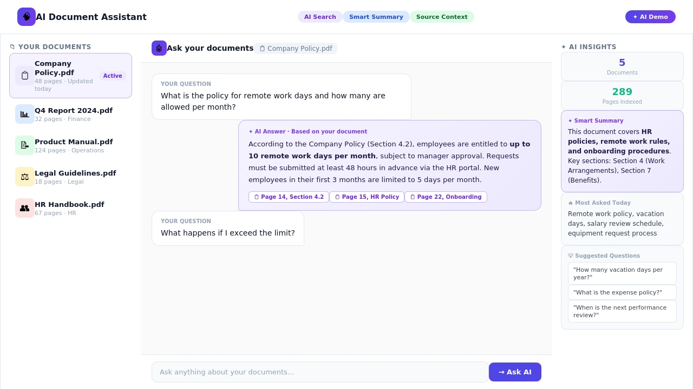

AI Assistant + Document Intelligence
AI Document Assistant
A business document assistant concept for asking questions, summarizing policies, and surfacing source-backed AI insights from internal files.
AI SolutionsRAGDocument SearchBackend APIs